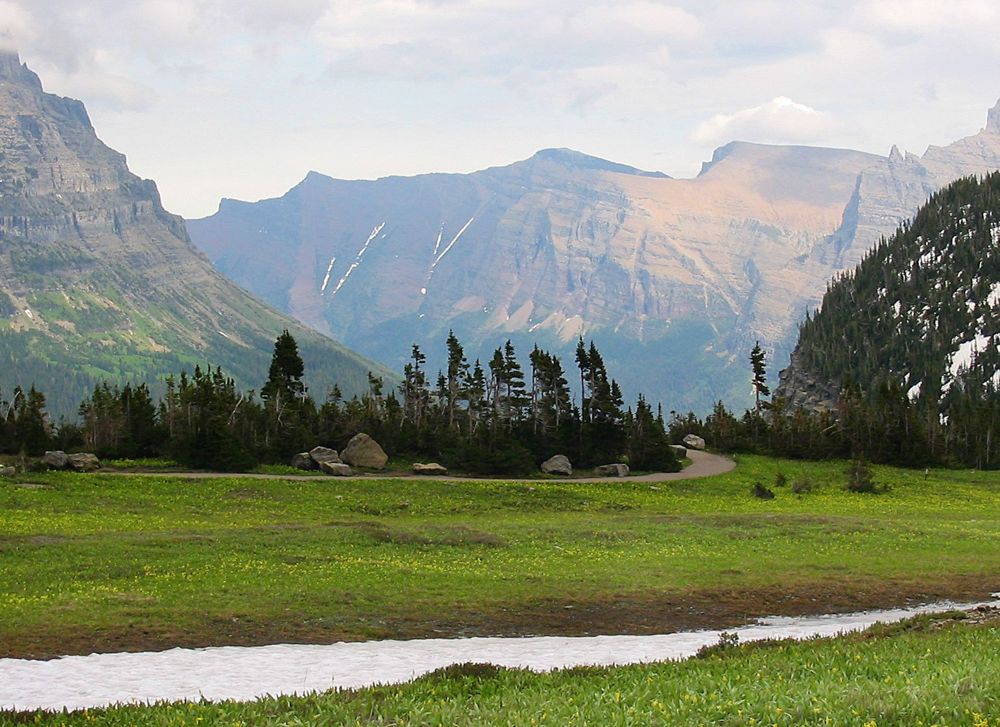
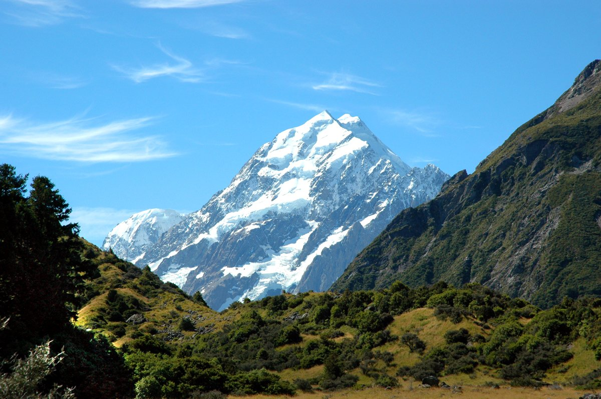
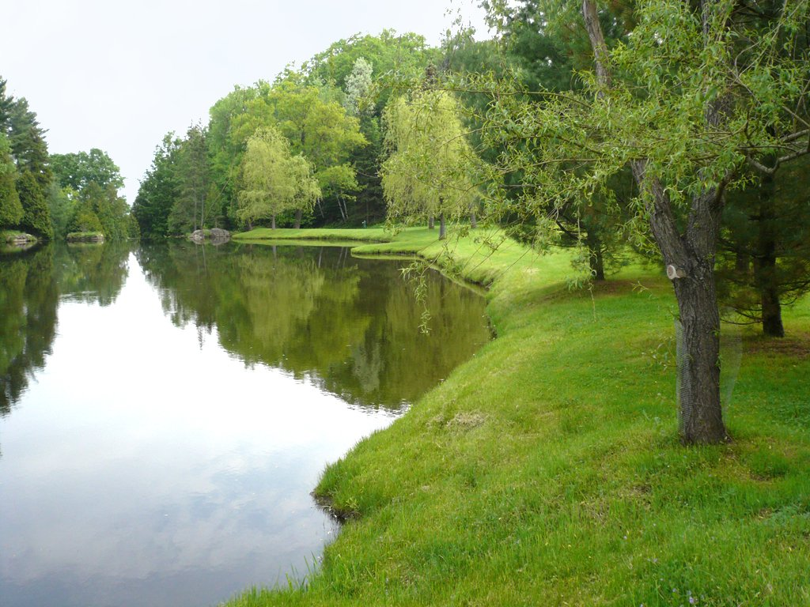

Helena Tour
- Difficulty: Beginner
- Cost: $199
- Length: 1 day
- Location: Helena Montana
- Contact: John Smith

Bike with us on a day tour of the beautiful Helena countryside!
Lunch, dinner, one-night lodging, and all other expenses are included in the above fee!
This tour is designed for all levels of bicycling, and is wonderful for families! We offer this
tour twice a week, so contact John Smith for
more information!
Summer Tour!
- Difficulty: Average
- Cost: $499
- Length: 3 days
- Location: Yellowstone National Park
- Contact: Jane Doe

Join us on a 3 day tour of Yellowstone National Park! Our expert tour gide will be
taking us on a tour to see the beautiful mountains and wildlife of eastern Yellowstone.
As with all of our tours, food, lodging, and all other expenses are included in the above
fee! This tour is perfect for well-traveled beginners to advanced adventurers. This tour
recurs every two weeks, so contact Jane Doe for
more information!
Yellowstone Adventure!
- Difficulty: Advanced
- Cost: $799
- Length: 5 days
- Location: Big Sky resort
- Contact: Jane Doe

This is our most advanced tour of the Yellowstone area. Our most experienced tour gides
know the best routes to take through Yellowstone starting at the Big Sky resort. The
above fee covers all food and loding expenses. We do NOT recommend this
tour for anyone who has less than two years of mountain biking experience, as we will be
taking very technical and long routes through the national park. This tour is only offered,
twice this summer, so please contact Mike Johnson for
more information!
Beaver Ponds Trail
- Difficulty: Beginner
- Cost: $99
- Length: 1 day
- Location: Beaver Ponds
- Contact: Bill Wilcox

Join us on a day tour of a nice nature trail on Beaver Pond. We will take you around Beaver
Pond, on a nice, quiet trail. Breakfast and lunch is provided, and all other expenses are
included in the above fee! This tour is perfect for casual bikers and family trips! We offer
this tour daily, so contact Bill Wilcox for
more information!